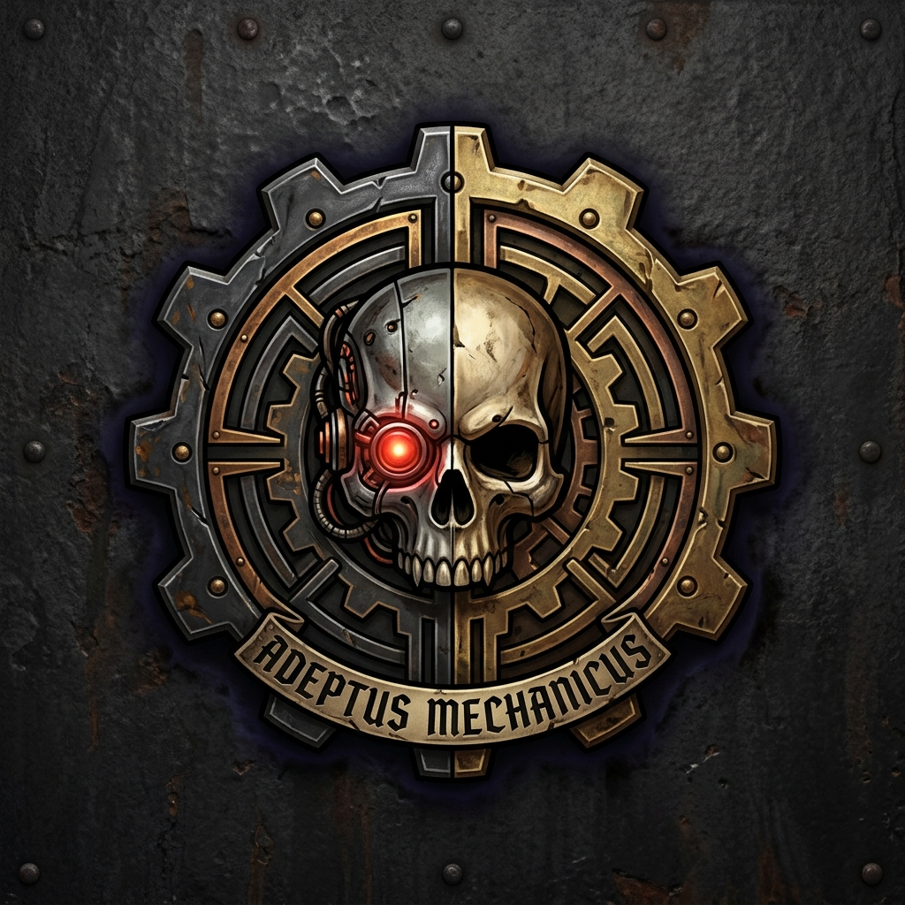
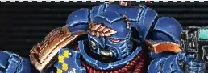

方案二 · 机械教沉思者终端 — 平板横屏大贤者舰桥级双联沉思者控制台 (1280×800)

冥工之环 (CANOPTEK CIRCLE)
先手权持有 · 方尖碑矩阵激活
04 CP
06 VP
++ OMNISSIAH TACTICAL COGITATOR // TP-02 FIREFIGHT ++
第二转折点 · 交战序列进行中
05 VP
03 CP
狼侦察小队 (WOLF SCOUTS)
秘密主要行动已封存 · 击杀等级 1
++ 通道 ALPHA：冥工之环 (6/6) ++
节点: 3

● 地相技师 [当前激活]
APL 03 · 6" · SV 3+ · 交战
15/15
◎ 冥工加速巨虫
APL 02 · 6" · SV 4+ · 隐匿
12/12
▲ 冥工巨虫战士 [受创]
APL 02 · 4"▼ · SV 3+
04/14
○ 墓穴爬行者 [已待机]
APL 02 · 6" · SV 4+
10/10
++ 鸟卜仪火控锁定 // AUSPEX TARGETING TELEMETRY ++
地相技师 [高斯震击枪] ⟫ 狼侦察猎手 (SV 3+ · 13/13)
武器参数：4A · 命中 3+ · 伤害 4/5 · 关键词：[穿刺 1] [严重] [节点平衡]
掩护拨杆
● 普通预留 1
制高点探针
● ≥2" 精准 1
烟雾/遮挡
○ 无修正
▲ 攻击脉冲示波器 (1 暴击 · 2 普通)
6
★暴击 5
5
◆精准 4
3
已抵消
长按任意脉冲块可注入「指挥重掷」或手动改判
机魂裁决净伤害
−9 HP
⚙ 注入伤害
伤害关口微调
▼ 防御护盾示波器 (3−穿刺1 = 2枚)
4
◆掩护抵挡
1
失败
✓ 已配对抵挡 1 枚普通攻击
++ 机魂战局日志 (支持 100 步留痕回溯) ++
> [TP2-08] 地相技师 激活「方尖碑节点矩阵」
> [TP2-07] 狼侦察猎手 指挥重掷 防御骰 2→1 (↶已撤回)
> [TP2-06] 冥工加速巨虫 完成「传输情报」(+1 VP)
ⓘ 核心律法原文 · 严重 (Severe) · PDF P.111
如果你没有保留任何暴击成功，你可以将一枚保留的普通成功改为暴击成功（含精准预留的成功）。
++ 通道 OMEGA：狼侦察 (5/6) ++
风暴标记: 1
◎ 狼侦察猎手 [被锁定目标]
APL 03 · 6" · SV 3+ · [狼牙项链]
13/13
● 符文祭司侦察兵
APL 03 · 6" · SV 3+ · [召唤风暴]
12/12
● 芬里斯巨狼
APL 02 · 8" · SV 5+ · 隐匿
09/09